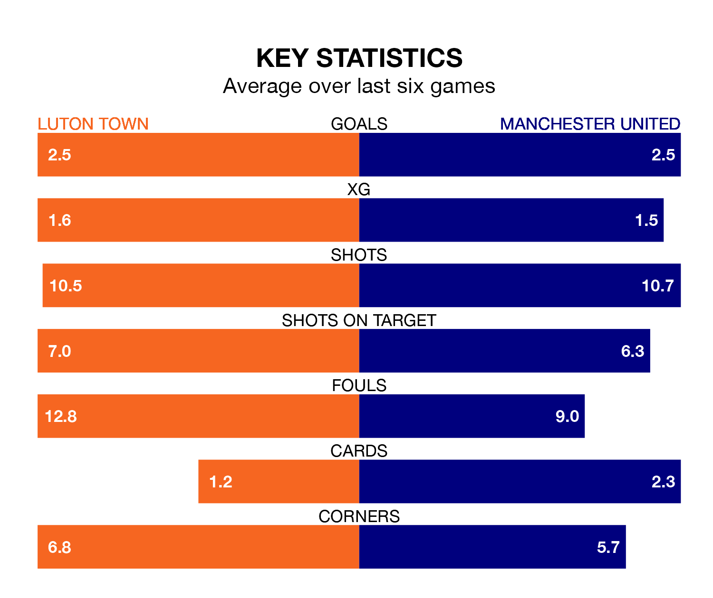

Manchester United visit Luton Town at Kenilworth Road on Sunday on the back of three consecutive wins in the Premier League.
United have picked up 13 points from their last six games, and they face a Hatters side who lost their last match, and have collected eight points from the last possible 18.
In André Onana, United can rely on one of the league's safest pair of hands. He has kept seven clean sheets in his 24 appearances this season, and only one other 'keeper – Everton's Jordan Pickford – has been able to prevent the opposition scoring on more occasions in the Premier League.
In Luton's net, Thomas Kaminski has two clean sheets in 23 games. He has conceded a goal every 49 minutes, 50% more often than the 72 minutes between goals for Onana Onana.
Town are 18th in the table after 23 games, of which they have won five and drawn five, earning 20 points.
The Red Devils are 12 places ahead of the Hatters in sixth, with 13 wins and two draws putting them on 41 points.
With 33 goals in 24 games so far this season, the visitors are scoring at below the league average rate with 1.4 goals per game. But they are conceding fewer than average too, letting in 33 goals at a rate of 1.4 per game.
The home side are also below average scorers, with 1.4 goals per game, compared to a league average of 1.6. They have conceded 2.0 goals per game.
Luton's last match was on February 10, a 3-1 loss against Sheffield United, with Carlton Morris getting the goal for the Hatters.
United beat Aston Villa 2-1 last time out, on February 11, with Rasmus Højlund and Scott McTominay on the scoresheet.
Updated: 13:30 (UTC), 12/02/24